Урок 16. Функции. Часть 1
14 Января 2023

Загрузить материалы к уроку.
Определение функции
Вы подошли к одной из самых важных частей в обучении основ программирования. Это достаточно сложная тема, поэтому наберитесь терпения и постарайтесь уделить ей больше времени чем обычно. Так же старайтесь в playground записывать каждое действие и смотреть как отрабатывает код.
Что же такое функция? Это блок кода, у которого есть имя и он может быть использован в различных частях программы.
Звучит не так просто, но давайте разбираться.
Начнем с простого примера:
(1) Создаем массив с типом Double, так как там есть значения с плавающей точкой, то этот тип определяется по умолчанию и прописывать его явно не нужно.
(2) При помощи цикла for 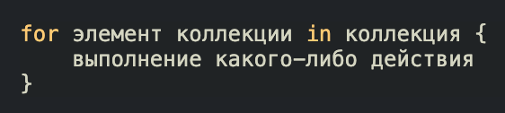 Пример: 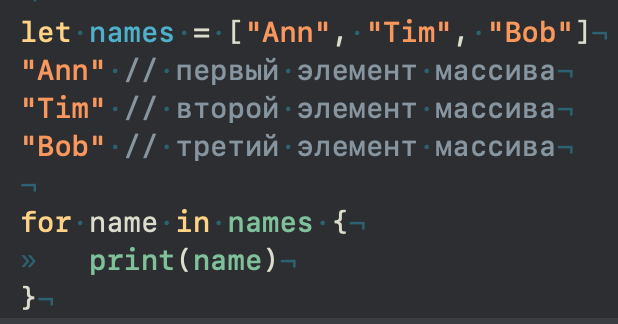 более подробно можно почитать в 12 уроке. ✍перебираем массив и выводим каждое значение на консоль.
(3) добавляем элемент в массив, используя метод Метод append() - добавляет новый элемент в конец массива. ✍append()
(4) И снова перебираем массив и выводим каждый элемент на консоль.
Внимательно посмотрите на код. В двух местах мы дублируем один и тот же код:
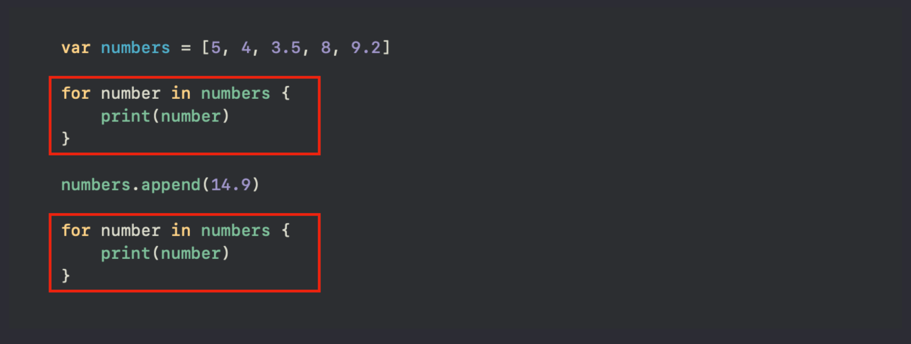Это два абсолютно одинаковых блока кода, а хорошие программисты не любят когда что то повторяется, это же в два раза больше работы! И следуя определению функции, мы можем этому блоку дать имя и вызывать его по имени в нужных нам местах.
Имя должно быть осмысленным и нести в себе информацию о назначении функции. Когда мы называем свойства, то мы используем существительные, а когда нам нужно назвать функцию, то здесь мы должны использовать глаголы, потому что это действие.
В нашем случае, блок кода занимается перебором массива и выводом элементов на консоль. Суть метода получить каждый элемент и вывести его на консоль, соответсвенно имя можно определить как printEachElementOfArray, при этом артикли в названии можно опускать.
Прежде чем мы реализуем данную функцию, давайте сперва посмотрим на синтаксис ее самого простого типа:
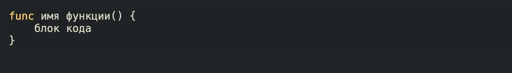Первым пишется ключевое слово func, так система понимает, что вы собираетесь реализовать функцию. Далее вы прописываете имя функции, то которое отражает суть блока кода внутри функции, после имени прописываете пустые скобки, чуть позже я расскажу зачем они нужны. Ну и завершающим элементом являются фигурные скобки, в которых мы определяем тот самый блок кода, который не хотим дублировать.
Наша функция будет выглядеть следующим образом:
Обратите внимание на вложенность, очень частая ошибка начинающих разработчиков, это не понимание где скобки начинаются и где заканчиваются, поэтому первое время наблюдайте что в чем лежит.
Не забывайте, что каждые фигурные скобки определяют свою 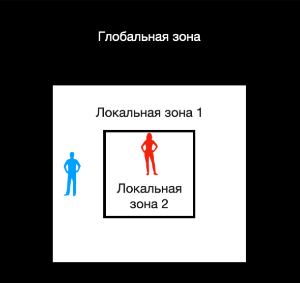 более подробно можно почитать в 6 уроке. ✍локальную зону видимости. Что бы проследить где начинается и заканчивается определенная зона, нужно кликнуть по открывающей или закрывающей фигурной скобке, блок за который она отвечает будет выделен.

Мы с вами реализовали функцию, но ни как к ней не обращаемся. То есть она не будет работать пока мы к ней не обратимся. Это можно сравнить с свойствами, которые мы создаем, мы определяем их через ключевое слово var или let, и если они нам нужны дальше в коде, мы к ним обращаемся по имени уже без ключевых слов. Здесь мы тоже определили функцию через ключевое слово func, и что бы к ней обратиться ключевое слово не нужно
Посмотрим как это сработает с нашим кодом:
(1) Объявляем функцию, то есть создаем.
(2) Вызываем функцию, то есть запускаем блок внутри нее, а именно начинаем перебирать коллекцию и выводить каждый элемент на консоль.
(3) Добавляем элемент в массив.
(4) Снова вызываем функцию, то есть повторно запускаем блок кода внутри нее.
Таким образом вы можете в любой точке вашего кода вызвать эту функцию, и у вас будет выполняться блок кода с перебором.
Реализация функции (Объявление функции) - по сути ее создание, когда пишем ключевое слово func имя() { код }
Вызов функции - обращаемся к функции по ее имени и в конце определяем круглые скобки, без ключевого слова func: printEachElementOfArray()
Исполнение кода - выполнение компилятором кода.

Давайте рассмотрим еще один пример. Нам нужно объявить функцию, которая будет будет находить рандомное целое число и выводить его на консоль. Первое что мы должны сделать, так это придумать название для функции. Она будет заниматься тем что выводить на консоль рандомное значение, значит так и назовем printRandomInt
Второе что нам следует сделать это продумать логику. Создадим новое свойство, которому присвоим рандомное значение использовав метод Этот метод возвращает рандомное число из заданного диапазона, в нашем примере от 1 до 10. Более подробно можно почитать в 6 уроке. ✍random:
Наше рандомное значение будет в диапазоне от 1 до 10. Все что нам осталось, это вывести данное свойство на консоль, для этого у нас есть print:
Свойство randomInt будет локальным, потому что находится внутри фигурных скобок, то есть за пределами этой функции, мы его не увидим.
Давайте запустим компилятор и посмотрим на результат:
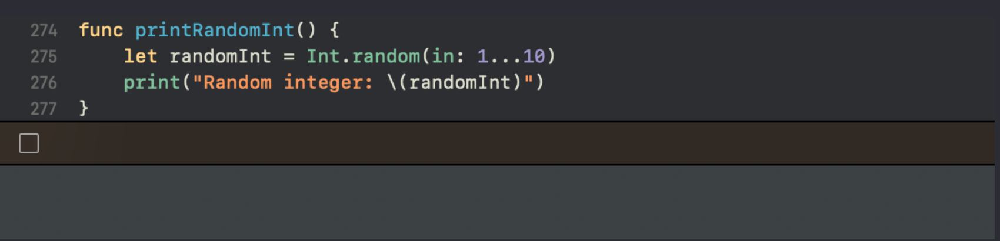Консоль осталась пустой, а все потому что мы данную функцию ни как не вызвали, она у нас есть как опция, но мы ее не используем. Это можно сравнить с педалями в автомобиле, они там есть, но пока вы на них не нажмете никакого результата не получите, машина так и будет стоять. Тут все по тому же принципу, функцию нужно запустить:
Теперь, если мы запустим компилятор то увидим наше рандомное значение:
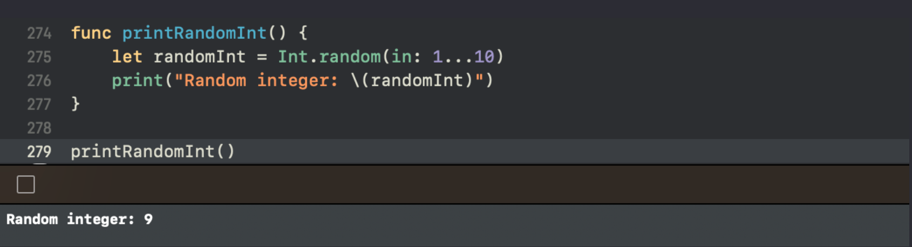Давайте проследим каждый сделанный компилятором шаг:
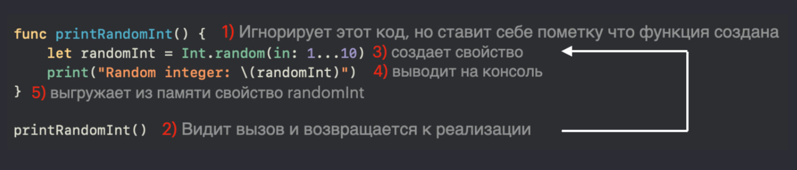1) Сперва он видит реализацию функции, но игнорирует ее, то есть не исполняет код внутри функции.
2) После объявленой функции он видит ее вызов, заглядывает внутрь и выполняет код.
3) Создает временное свойство randomInt, присваивает ему рандомное значение.
4) Выводит на консоль.
5) После того как компилятор выполнит весь код внутри, он выгрузит все созданные свойства внутри функции из памяти.
Таким образом мы можем в любой момент нашей программы вызвать эту функцию, количество таких вызовов не ограниченно, и каждый вызов компилятор будет выполнять код внутри:
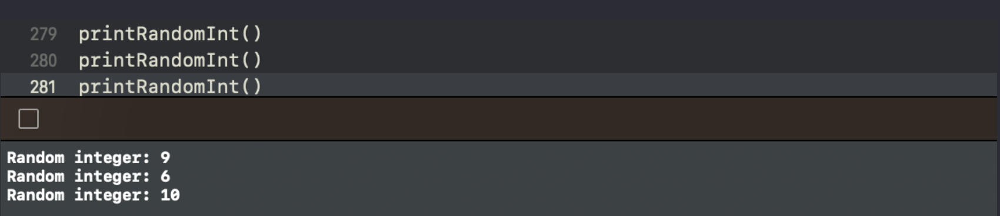Если вы не поставите круглые скобки при вызове функции, то она не отработает, то есть компилятор ее не вызовет и код внутри не будет исполнен.
Функции с возвращаемым значением
Мы с вами рассмотрели самый простой вариант функции. Но это не весь ее потенциал, функция могут возвращать какое либо значение. Синтаксис такой функции будет выглядеть следующим образом:
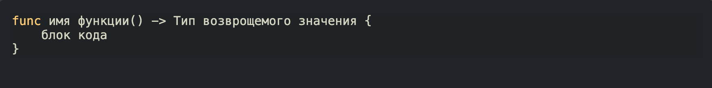После круглых скобок мы ставим результирующую стрелку (тире и знак больше), после нее определяем тип значения который хотим вернуть в этой функции, ну и сам блок где мы определим какой-то исполняемый код. Звучит не просто, но давайте разбираться.
Создадим функцию, которая будет возвращать строку, то есть тип String:
На данном этапе компилятор покажет нам ворнинг с просьбой вернуть значение типа String:
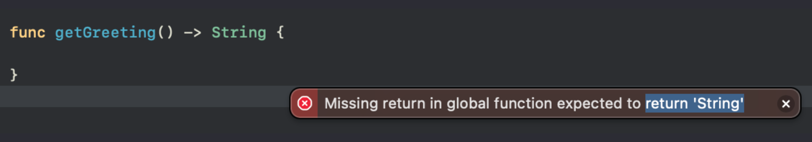то есть мы должны прописать ключевое слово return и вернуть данный тип:
При помощи ключевого слова return мы вернули значение с типом String. То есть после результирующей стрелки мы определяем возвращаемый тип, а после ключевого слова return значение этого типа.
Но на самом деле компилятор достаточно умный что бы понять что в функции где только одна строка, вернется эта строка, поэтому ключевое слово return будет лишним:
Давайте еще пару примеров рассмотрим для понимания, с разными возвращаемыми значениями:
Это может быть и какое то свойство или выражение, которое содержит в себе значение нужного нам типа:
Думаю вы уловили этот момент, но что если у вас в функции больше чем одна строка, и не совсем очевидно, что вы возвращаете. Например:
Этот код выдаст ошибку, компилятор попросит вас показать что конкретно вы возвращаете, и вот в этом случае ключевое слово return обязательно:
При это код, который вы разместите ниже ключевого слова return, не будет выполнен, что я имею в виду?! Если я напишу следующим образом:
Принт никогда не выведет на консоль приветствие “Hi”, потому что ключевое слово return захватывает значение и выходит из функции, то есть функция заканчивает свою работу. Все что ниже return не будет выполнено.
А теперь давайте подумаем зачем нам нужно возвращать значение, и что нам это дает. Для начала вызовем все наши функции:
Если вы посмотрите на окно с права, то заметите что напротив вызванных методов, появлились значения, именно те которые возвращают функции:
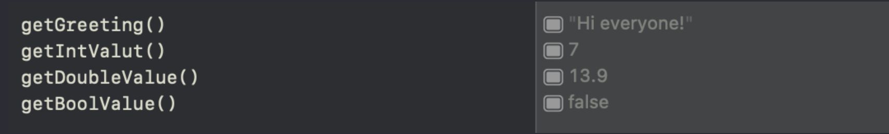Мы с вами знаем что если что то возвращается, то мы это что то можем присвоить свойству:
Либо использовать возвращаемое значение в какой-либо логике напрямую:
после ключевого слова if мы вызываем функцию, которая нам возвращает логическое значение, и в зависимости от того, какое это будет значение, мы либо выполним блок кода в фигурных скобках, либо нет.
Функции с параметрами
Функция может не только возвращать значение, но и принимать их извне, в качестве своих параметров. Грубо говоря мы можем создавать константы в ее круглых скобках и использовать только в ее локальной зоне.
Давайте посмотрим на синтаксис:
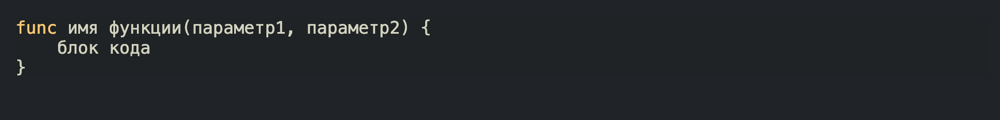Круглые скобки больше не пустые, внутри определяем, через запятую параметры функции, так сказать не инициализированные константы, без ключевого слова let:
В данной реализации number является внутренней константой, она пока не инициализирована, и обращаться к ней мы можем только внутри функции.
Давайте теперь посмотрим на вызов:
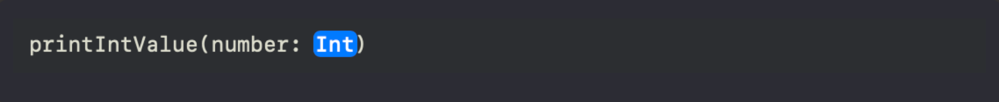именно в этот момент мы инициализируем внутренную константу функции. Как это работает?!
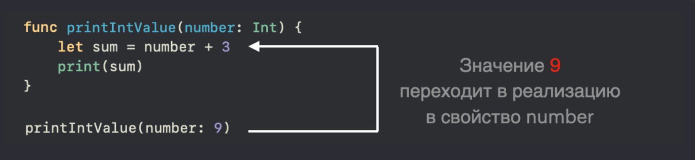Давайте теперь сравним вызовы двух разных функций:
(1) Первая функция без параметров и она использует внешнюю константу number, тогда как (2) вторая функция с параметром, и она использует внутреннюю константу number.
Подумайте какой значение выведет на консоль первая функция, и какое вторая функция.
В чем же плюсы второй функции с параметром?! Все дело в том, что такая функция самодостаточна, и ее можно переиспользовать, то есть вырвать из этого playground, и перенести в другой, в отличии от первого примера с внешним свойством, Где вместе с функцией придется переносить и все ее внешние свойства, иначе внутренняя логика поломается. Еще плюс второй функции, в том что по окончанию своей работы она выгружается из памяти вместе со своими параметрами, в отличии от второй, которая после завершения оставит после себя мусор в виде внешнего свойства.
Но это совсем не значит что мы всегда теперь должны использовать функции с параметрами и у нас не должно быть внешних свойств, об этом подробно мы поговорим на следующем уроке.
Функция читается вместе со своими параметрами и возвращаемыми значениями, а это значит что вы можете использовать одинаковые имена, например рассмотренные функции ранее будут разными:
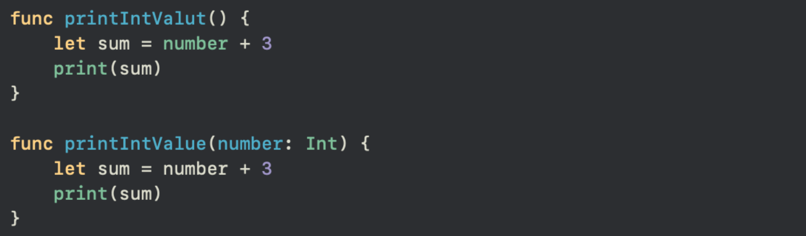Одним словом, если у вас отличается хотя бы какая-то часть функции, будь то тип параметра или возвращаемое значение, то это будет считаться совершенно другой функцией. В списке для выбора функции у вас будет два варианта:
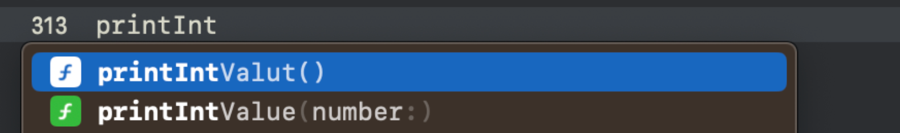
Давайте посмотрим еще одну реализация, но уже увеличим количество входных параметров:
Данная функция принимает два параметра, массив с типом Int и value с типом Int, воспринимайте их как две внутренние не Инициализировать свойство - присвоить значение свойству в момент его создания. ✍инициализированные константы функции, и мы можем внутри нее их использовать
(1) запускаем условную конструкцию if, определяем есть ли value в массиве, используя для этого метод Метод contains() - возвращает логическое значение, указывающее, содержит ли массив определенный элемент. В скобках определяете элемент, который хотите проверить, и если этот элемент есть в массиве, то метод вернет true иначе false. ✍contains().
(2) Если метод массива contains возвращает true, то мы выводим на консоль фразу “Значение <значение> есть в массиве”
Напомню, что пока мы функцию не вызовем она работать не будет, поэтому делаем вызов:
Скорее всего вы захотите спросить, почему мы внешний массив передаем в параметр функции? Зачем тогда вообще создавать параметр если мы все равно берем данные извне?
Давайте снова обратимся к примеру, и создадим похожую функцию:
Две почти одинаковые функции, выполняют одну и ту же логику, и получат один и тот же результат, но разница только в том, что реализацию функции (1) вы можете скопировать в другой файл (откройте новый плейгрануд и скопируйте туда только реализацию функции), со второй (2) у вас так не получится, потому что мы зависим от внешнего свойства values (так же попробуйте перенести эту функцию в новый файл)
В дальнейшем вы научитесь определять когда вам нужно свойство снаружи, а когда в качестве параметра, пока же нужно просто понимать как это работает.
Все объявленые параметры в функции должны быть использованы в логике, иначе это лишний параметр, в коде не должно быть ничего лишнего! Про запас параметры создавать не нужно!
По традиции давайте проследим каждый шаг нашей функции:
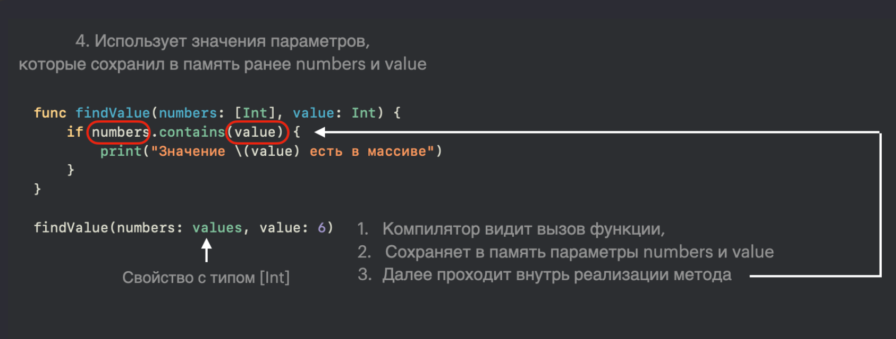Если говорить по простому, то при реализации функции мы используем не инициализированные константы в параметрах, а при вызове мы их инициализируем и внутри функции работаем с уже конкретными значениями.
Параметры в пределах одной функции должны быть уникальными. Параметры не должны быть глаголами, предлогами или местоимениями. Параметры – это сущности и должны отвечать на вопрос Что?
Функции с параметрами и с возвращаемым значением
В целом здесь вы ничего нового не узнаете, такой вид функции это объединение двух последних.
Давайте сразу обратимся к синтаксису такой функции:
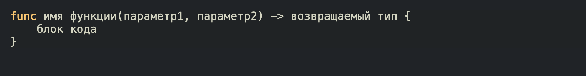Сразу обратимся к примеру и разберем его на составляющие:
Данная функция, принимает в качестве параметра массив целых чисел, и возвращает только четные значения.
Так как параметры функции являются константами, то мы не можем их изменять, а это значит что нам нужен посредник, поэтому (1) мы создаем новый пустой массив того типа, который нам нужно вернуть.
(2) Далее перебираем массив, из параметра, берем каждое его значение
(3) проверяем его на четность используя Оператор % - это оператор остатка от деления. Если разделить 7 на 3, то остаток будет равен 1: 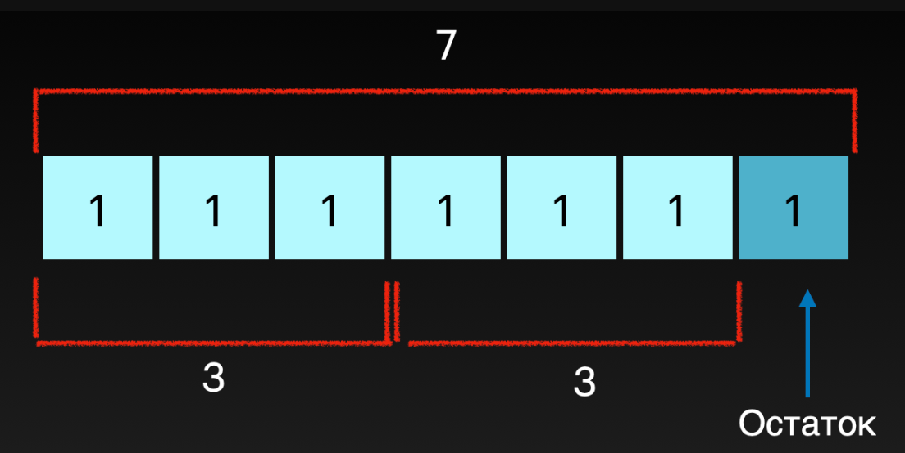 Более подробно можно почитать в 3 уроке. ✍оператор %.
(4) Если число является четным, то мы добавляем его в новый массив. Напомню, что пока цикл не переберет все элементы коллекции компилятор дальше не идет. Поэтому после того как цикл закончит последнюю итерацию, у нас будет наполненный массив всеми четными значениями
(5 ) возвращаем новый массив
Теперь у вас есть функция, которая в любой момент может отфильтровать вам массив целых числе, и вернуть массив только с четными значениями, а ее результат мы можем использовать дальше в коде:
Посмотрите на тип свойтсва evenNumber (зажмите option и кликните по свойству)
В следующем уроке продолжим знакомство с функциями, ну а ваша задача закрепить знания решением задач.